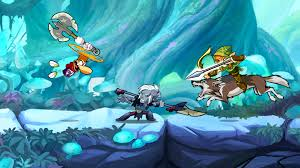
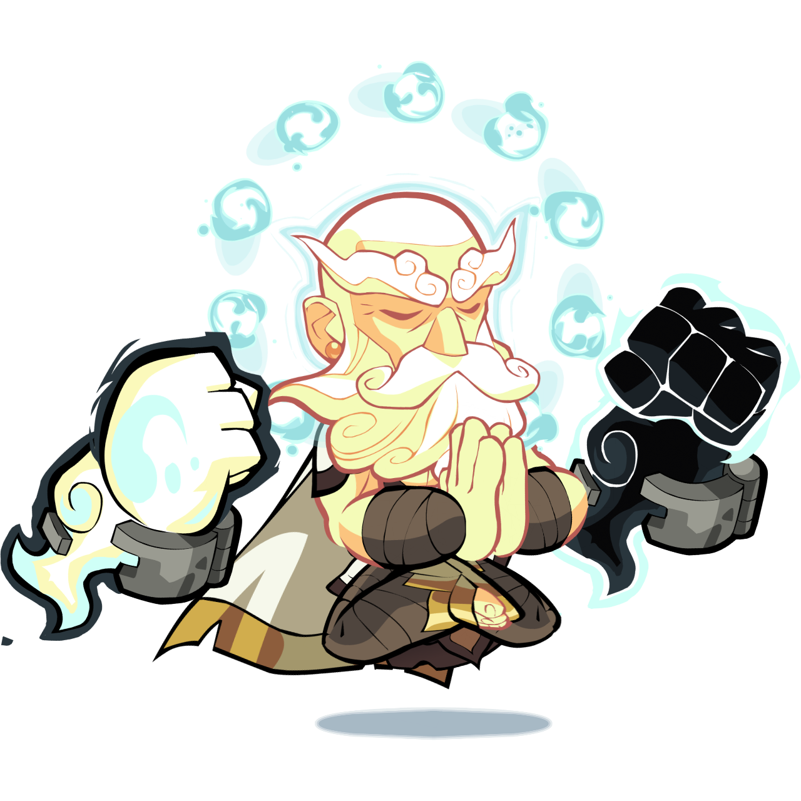
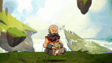
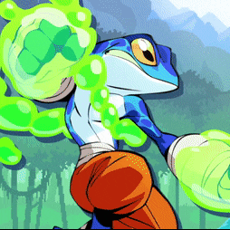

<!DOCTYPE html>
<html lang="pt-br">
<head>
    <meta charset="UTF-8">
    <meta name="viewport" content="width=device-width, initial-scale=1.0">
    <title>Meu blog Pssoal </title>


    <style>


.titulo {text-align: justify;
 margin-left: 10%;
 margin-right: 10%;
}

.subtitulo{text-align: center;
}


.alunos {display: flex;
justify-content: center;
gap: 40px;
margin-top: 20px;
background-color: sienna;
margin: 1%;
padding: 1%;
}


.aluno {
text-align: center;
background-color: burlywood;
padding: 2%;
}

.coffee {
display: flex;
justify-content: center;
text-align: justify;
margin: 1%;
padding: 1%;
}

img {
margin: 1%;
border-radius: 20%;
}

button{
    background-color: burlywood;
    border-radius: 20%;
    color: chocolate;
}


</style>


</head>

</html>


<body>

<div class="titulo">

<h1 class="subtitulo">Meu Blog Pessoal ! </h1>
<p>Seja bem vindo ao meu blog pessoal,
aqui vai ter várias coisas legais e coisas sobre min.
</p>

</div>
    


<p> Como vocês podem ver eu gosto muito de Brawlhalla</p>


<p> Brawlhalla é um jogo de luta de plataforma 2D gratuito que suporta até 8 jogadores locais ou online com cross-play
     completo para PC, PS5, PS4, Xbox Series X|S, Xbox One, Nintendo Switch, iOS e Android! Os maiores guerreiros da história
     se enfrentam para provar quem é o melhor em um teste épico de força e habilidade.</p>


<p>O personagem que eu mais gosto é o Wu Shang e tenho mais de 500 vitórias
    com ele no modo ranqueado.
</p>
 

<div class="alunos">

    <div class="aluno">
        <h2>Wu Shang</h2>
     
<p>“Wu Shang é um monge errante que renunciou ao seu passado violento e misterioso e caminha pela Terra em busca da iluminação.
     Ele tenta evitar chamar a atenção, mas a cada semana, Wu Shang precisa usar artes marciais e sabedoria ancestral para resolver problemas em um novo local.”
Apresentação de Karate Chop!, uma série de TV baseada de forma desajeitada na vida do lendário monge guerreiro Wu Shang.</p>
    </div>


    <div class="aluno">
     <h2>.</h2>
     
<p>Skin de Wu Shang</p>
    
<div class="alunos">
   <a href="heitor.html">
    <button>heitor</button>
   </a>
   <a href="vt.html">
    <button>vitor</button>
   </a>
</div>


</body>

